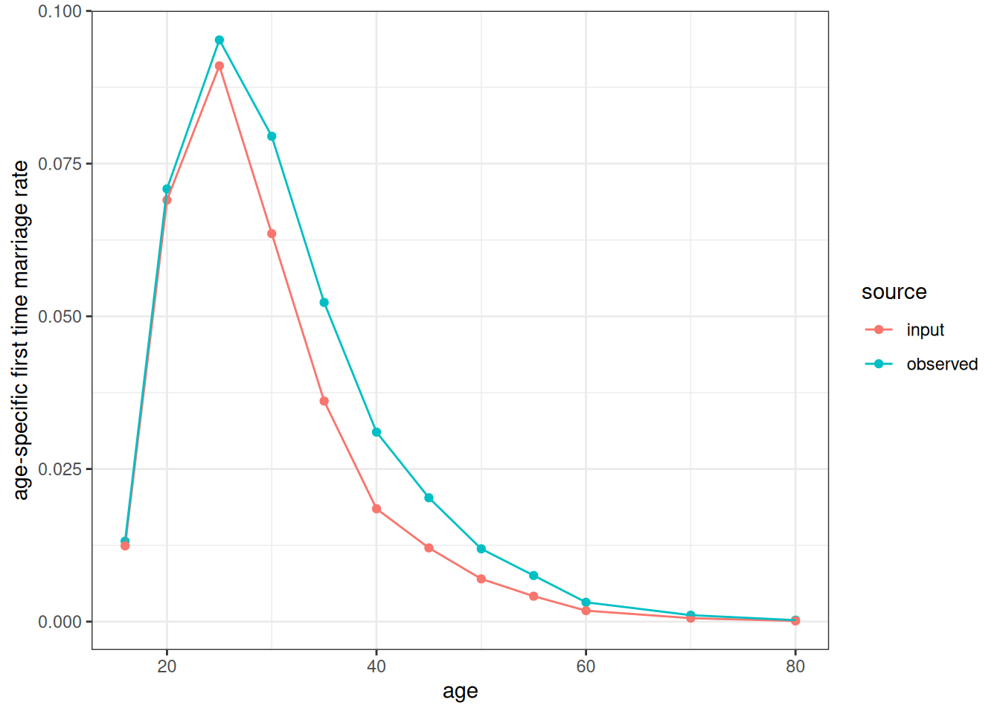
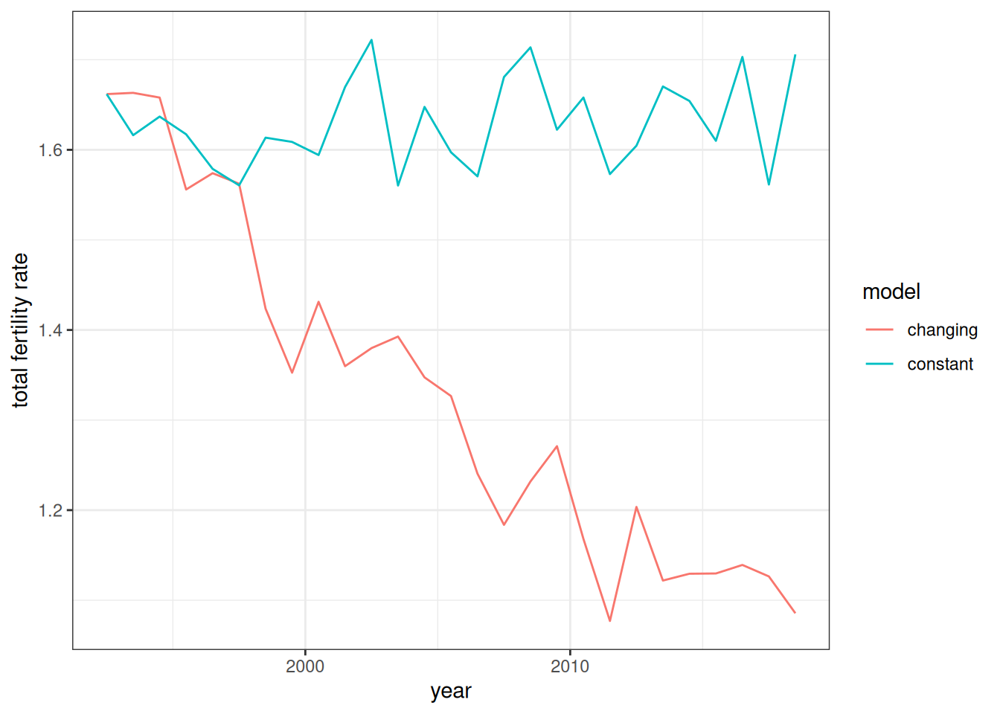
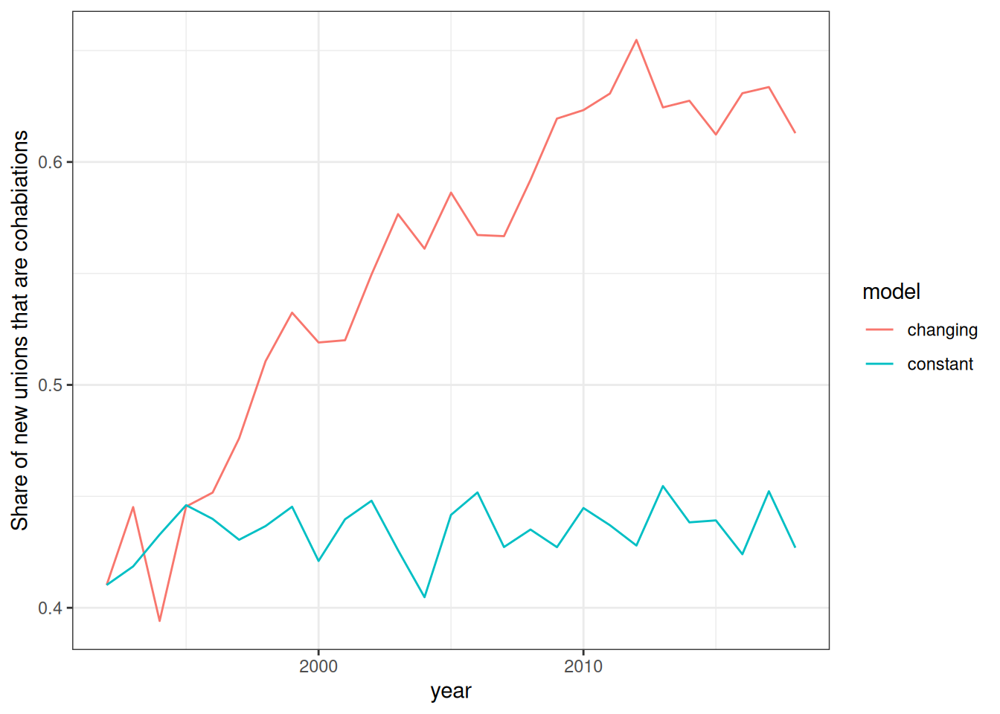
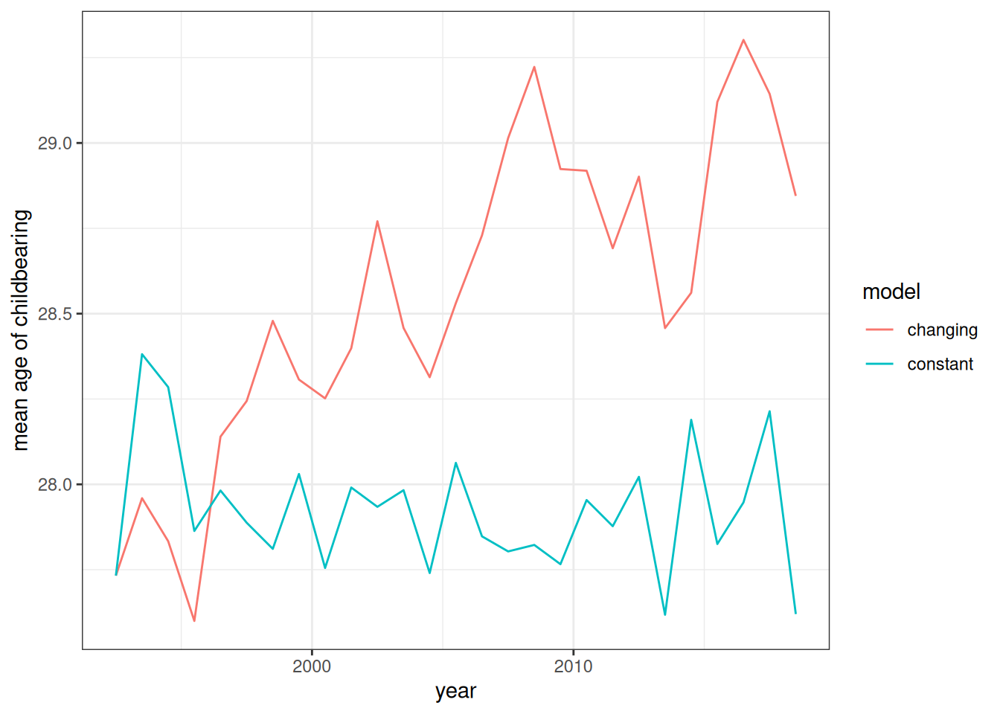
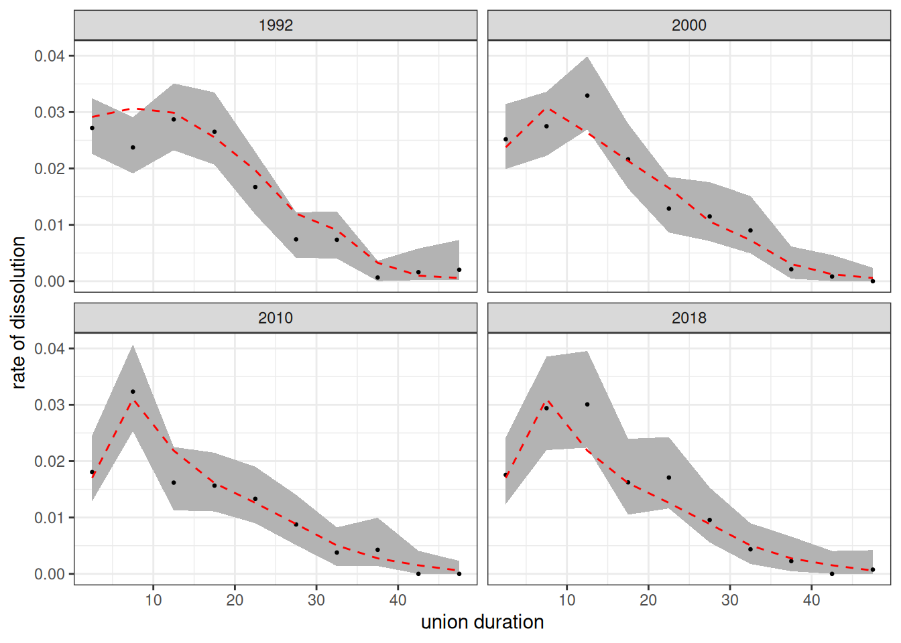
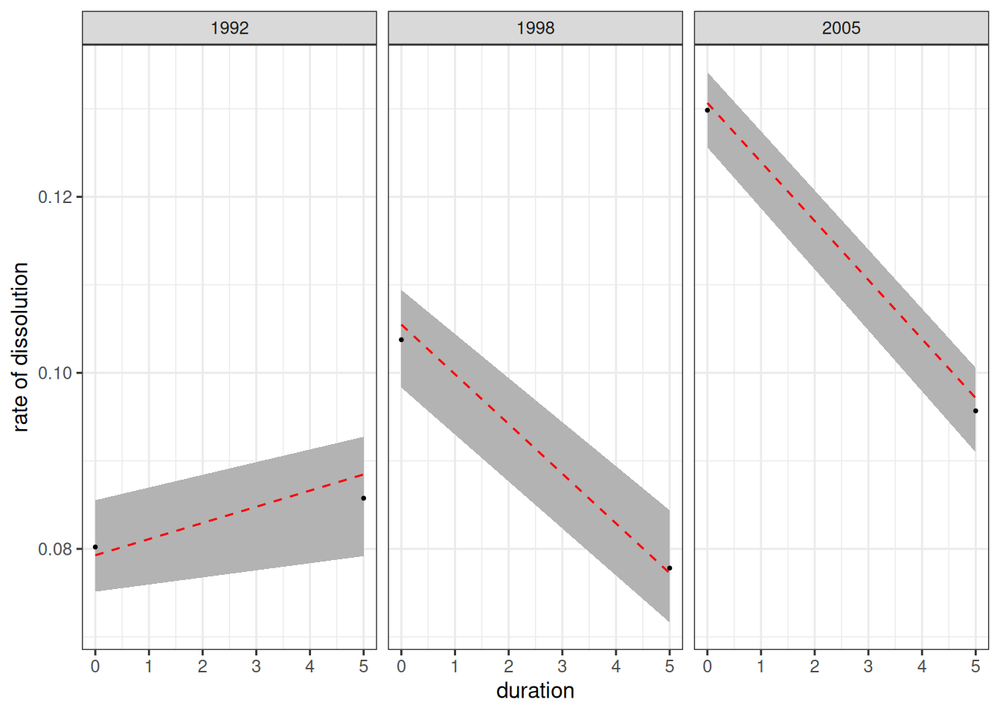
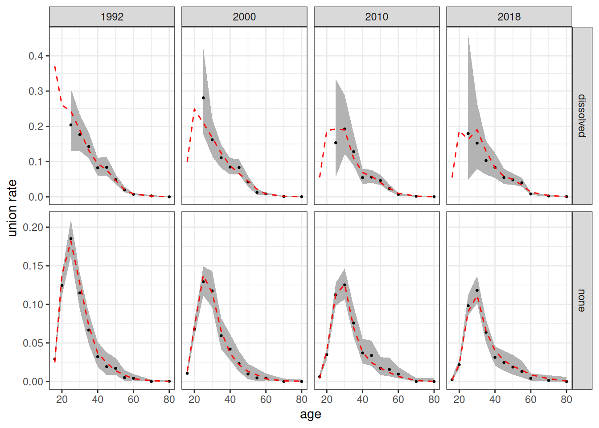
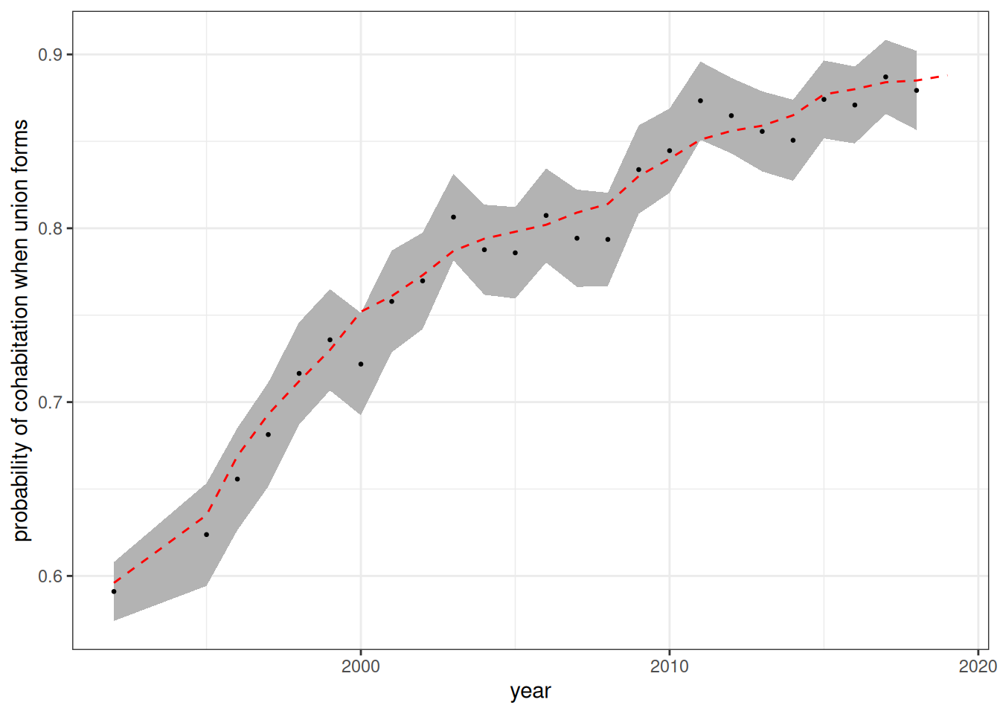

The “second demographic transition” is a term used to describe several features of the demographic profiles of advanced industrial countries that have produced complicated family structures and low fertility, such as rising rates of cohabitation, later age at marriage, fertility delay, and increasing marriage dissolution.
Even if age-specific fertility rates were to remain constant within union types (e.g. unpartnered, cohabitation, and marriage), we would expect overall fertility rates to fall because women spend less time in a partnered status during the most reproductive period of life.
To show this effect on overall fertility, we will set up a simulation that holds fertility rates within union type constant, but increases the following:
- frequency of cohabitation
- age profile of union formation rates
- union dissolution rates (both cohabitation and marriage)
We can then compare the overall fertility rates from this simulation to a simulation where these are held at their baseline rates.
Gather Inputs
This simulation has a high demand on the required inputs. Given that, we will not focus on an exact replication of real values for a single country, but will construct a “stylized” scenario from available data sources. For this simulation, I have chosen to use values based on England and Wales because the Office for National Statistics (ONS) produces detailed reports that can get us most of what we need. We will run the simulation from 1992 to 2019, because we can find data sources for several inputs that roughly align with this time period.
All of the data are available in the package under the object named england_wales_1992_onward.
Fertility and Mortality
First, we need to get age-specific fertility rates disaggregated by union status. We use O’Leary et. al. (2010) to get age-specific fertility rates in 1992 by union status (Table B1, marriage, cohabitation, or unpartnered).
fertility_rates1992 <- england_wales_1992_onward$fertility
fertility_rates1992
#> # A tibble: 18 × 4
#> union_type age_start age_end rate
#> <chr> <int> <int> <dbl>
#> 1 marriage 16 20 0.287
#> 2 marriage 20 25 0.196
#> 3 marriage 25 30 0.170
#> 4 marriage 30 35 0.103
#> 5 marriage 35 40 0.0355
#> 6 marriage 40 45 0.0057
#> 7 cohab 16 20 0.192
#> 8 cohab 20 25 0.128
#> 9 cohab 25 30 0.108
#> 10 cohab 30 35 0.101
#> 11 cohab 35 40 0.0623
#> 12 cohab 40 45 0.0166
#> 13 unpartnered 16 20 0.022
#> 14 unpartnered 20 25 0.031
#> 15 unpartnered 25 30 0.0327
#> 16 unpartnered 30 35 0.0263
#> 17 unpartnered 35 40 0.0133
#> 18 unpartnered 40 45 0.0029These fertility rates are importantly stratified by the union_type variable, which will ensure that women’s hazard rate of a birth is dependent on their current union status. It is not stratified by time because we want to hold these rates constant throughout the simulation. We can also use the calulate_tfr helper function to see the implied TFR within each union type.
fertility_rates1992 |> calculate_tfr()
#> # A tibble: 3 × 4
#> union_type age_start age_end tfr
#> <chr> <int> <int> <dbl>
#> 1 marriage 16 45 3.70
#> 2 cohab 16 45 2.85
#> 3 unpartnered 16 45 0.619As expected, fertility is highest within marriage and lowest for an unpartnered status.
We will hold mortality rates to the 1992 level. These values are pulled from the Human Mortality Database (HMD) using our get_mortality_hmd helper function.
mortality_rates1992 <- get_mortality_hmd("GBRTENW", 1992, shape = "5x1",
open_age = 90)
mortality_rates1992Mortality rates are stratified by sex, which is mandatory but not by time.
Cohabitation
Cohabitation data comes from the report by Beaujouan and Bhrolcháin (2011) and covers all of Great Britain. We start by using this data to get the probability that when a union forms it will be a cohabitation rather than a marriage. The data do not provide this exact number but do give us the share of married couples that cohabited prior to marriage. This number excludes cohabitations that did not survive to marriage or remained cohabitations and includes prior marriages in a given year rather than a strict period measure. For our purposes, we treat it as a rough proxy of the number we want.
The report does provide this by age group, but to keep things simple we will assume that this probability is constant with age.
prob_cohab <- england_wales_1992_onward$premarital_cohabitation |>
filter(age_groups == "All ages") |>
arrange(year) |>
rename(prob = prop_cohabit) |>
mutate(
time_start = year,
time_end = year + 1,
age_start = 0,
age_end = Inf
) |>
select(starts_with("time_"), starts_with("age_"), prob) |>
# extend 1994 back to 1992
mutate(time_start = if_else(time_start == 1994, 1992, time_start)) |>
select(-age_groups)
prob_cohab
#> # A tibble: 26 × 5
#> time_start time_end age_start age_end prob
#> <dbl> <dbl> <dbl> <dbl> <dbl>
#> 1 1992 1995 0 Inf 0.596
#> 2 1995 1996 0 Inf 0.635
#> 3 1996 1997 0 Inf 0.669
#> 4 1997 1998 0 Inf 0.693
#> 5 1998 1999 0 Inf 0.712
#> 6 1999 2000 0 Inf 0.73
#> 7 2000 2001 0 Inf 0.752
#> 8 2001 2002 0 Inf 0.761
#> 9 2002 2003 0 Inf 0.773
#> 10 2003 2004 0 Inf 0.787
#> # ℹ 16 more rowsThis dataset has the same structure as all of our rate schedules except that we use prob instead of rate. By using [0, Inf) as the age range, we can define a single probability across all age groups. The time_start and time_end columns allow this probability to vary by time.
We also need to construct conversion rates of cohabitations to marriages, as well as dissolution rates for cohabitation. Beaujouan and Bhrolcháin (2011) provide cumulative probabilities at five and ten year durations of cohabitations either ending in marriage or separation for three different marriage cohorts. We can convert these to hazard rates using the following method. First, we convert the cumulative probabilities to probabilities within the 0-5 and 5-10 year duration bands, respectively. If \(p_m\) and \(p_d\) are the probabilities of marriage or dissolution for cohabitations over a period of length \(n\), we can get the total exit hazard for cohabitation (\(h_e\)) as:
\[h_{e} = -log(1 - p_m - p_d)\]
We can then apportion that to marriage risk and dissolution risk by multiplying the exit hazard by the relative proportion of marriage and dissolution:
\[h_{m} = h_e \frac{p_m}{p_m + p_d}\] \[h_{d} = h_e \frac{p_d}{p_m + p_d}\]
cohab_hazards <- england_wales_1992_onward$cohabitation_outcomes |>
# extrapolate missing values for 10 year estimates in last cohort
mutate(
across(
c(marriage_10, separation_10, continuing_10),
~ replace(.x, is.na(.x), 2 * .x[2] - .x[1])
)
) |>
# fix rounding error so they all sum to one
mutate(
across(
c(marriage_10, separation_10, continuing_10),
~ .x / (marriage_10 + separation_10 + continuing_10)
)
) |>
mutate(
# probs are cumulative so to get this relative to each span we need
# to make some changes
marriage_5_10 = (marriage_10 - marriage_5) / continuing_5,
separation_5_10 = (separation_10 - separation_5) / continuing_5
) |>
select(cohort_start, cohort_end, marriage_5, separation_5,
marriage_5_10, separation_5_10) |>
pivot_longer(
cols = -c(cohort_start, cohort_end),
names_to = c(".value", "interval"),
names_pattern = "(marriage|separation)_(.*)"
) |>
mutate(
hazard_exit = - log(1 - marriage - separation) / 5,
hazard_marriage = hazard_exit * (marriage / (marriage + separation)),
hazard_dissolved = hazard_exit * (separation / (marriage + separation)),
dur_start = if_else(interval == "5", 0, 5),
# treat the 5-10 duration as the open interval
dur_end = if_else(interval == "5", 5, Inf),
# 1990-1995 cohort will be stand in for 1992 to 1997
# 1995-2000 cohort wil stand in for 1998-2005
# 2000-2005 cohort will stand in for 2005-2019
time_start = case_when(
cohort_start == 1990 ~ 1992,
cohort_start == 1995 ~ 1998,
cohort_start == 2000 ~ 2005
),
time_end = case_when(
cohort_start == 1990 ~ 1998,
cohort_start == 1995 ~ 2005,
cohort_start == 2000 ~ 2020
)
) |>
select(starts_with("time_"), starts_with("dur_"),
hazard_marriage, hazard_dissolved) |>
pivot_longer(cols = starts_with("hazard_"), names_prefix = "hazard_",
names_to = "type", values_to = "rate")
conversion_rates <- cohab_hazards |>
filter(type == "marriage") |>
select(-type)
conversion_rates
#> # A tibble: 6 × 5
#> time_start time_end dur_start dur_end rate
#> <dbl> <dbl> <dbl> <dbl> <dbl>
#> 1 1992 1998 0 5 0.158
#> 2 1992 1998 5 Inf 0.0983
#> 3 1998 2005 0 5 0.138
#> 4 1998 2005 5 Inf 0.0966
#> 5 2005 2020 0 5 0.146
#> 6 2005 2020 5 Inf 0.0362
cohab_dissolution_rates <- cohab_hazards |>
filter(type == "dissolved") |>
select(-type) |>
mutate(union_type = "cohab")
cohab_dissolution_rates
#> # A tibble: 6 × 6
#> time_start time_end dur_start dur_end rate union_type
#> <dbl> <dbl> <dbl> <dbl> <dbl> <chr>
#> 1 1992 1998 0 5 0.0793 cohab
#> 2 1992 1998 5 Inf 0.0885 cohab
#> 3 1998 2005 0 5 0.105 cohab
#> 4 1998 2005 5 Inf 0.0772 cohab
#> 5 2005 2020 0 5 0.131 cohab
#> 6 2005 2020 5 Inf 0.0971 cohabWe make some assumptions to get all of this to work. First, we extrapolate the later 5-10 duration period for the 2010 cohort. We also assume that the rate for the 5-10 duration group continues indefinitely. Finally, we try to map the different marriage cohorts roughly to time periods. The result are “chunky” time-varying duration bands for both conversion and dissolution of cohabitation.
Dissolution
Beaujouan and Bhrolcháin (2011) provide duration-based cumulative divorce and death risk of dissolution for marriages for 2005 and 2010. We can use this data to get 5-year duration bands of divorce hazard for these two time points. I will then interpolate rates between 2005 and 2010, extrapolate from 2005 to 1992 and hold them constant from 2010 onward.
dissolution_rates <- bind_rows(
england_wales_1992_onward$marital_divorce_death_2005,
england_wales_1992_onward$marital_divorce_death_2010,
) |>
# lets do it five year intervals
filter((anniversary %% 5) == 0) |>
arrange(year, anniversary) |>
group_by(year) |>
mutate(
divorce_increment = cumulative_divorce -
lag(cumulative_divorce, default = 0),
death_increment = cumulative_death -
lag(cumulative_death, default = 0),
surviving_start = 1 -
lag(cumulative_divorce, default = 0) -
lag(cumulative_death, default = 0),
p_divorce = divorce_increment / surviving_start,
p_death = death_increment / surviving_start,
p_exit = p_divorce + p_death,
rate = (-log1p(-p_exit) / 5) * (p_divorce / p_exit),
dur_start = anniversary - 5,
dur_end = anniversary,
union_type = "marriage"
) |>
ungroup() |>
select(year, union_type, dur_start, dur_end, rate) |>
# truncate to duration 50
filter(dur_end <= 50) |>
mutate(dur_end = if_else(dur_end == 50, Inf, dur_end))
# lets interpolate between 2005 and 2010 and extrapolate back to 1992
dissolution_rates <- dissolution_rates |>
select(year, union_type, dur_start, dur_end, rate) |>
pivot_wider(
names_from = year,
values_from = rate,
names_prefix = "rate_"
) |>
expand_grid(year = 1992:2019) |>
mutate(
rate = rate_2005 +
(pmin(year, 2010) - 2005) * (rate_2010 - rate_2005) / 5,
time_start = year,
time_end = year + 1
) |>
select(time_start, time_end, union_type, dur_start, dur_end, rate) |>
arrange(time_start, dur_start)
dissolution_rates <- dissolution_rates |>
bind_rows(cohab_dissolution_rates)
dissolution_rates
#> # A tibble: 286 × 6
#> time_start time_end union_type dur_start dur_end rate
#> <dbl> <dbl> <chr> <dbl> <dbl> <dbl>
#> 1 1992 1993 marriage 0 5 0.0291
#> 2 1992 1993 marriage 5 10 0.0307
#> 3 1992 1993 marriage 10 15 0.0299
#> 4 1992 1993 marriage 15 20 0.0255
#> 5 1992 1993 marriage 20 25 0.0197
#> 6 1992 1993 marriage 25 30 0.0120
#> 7 1992 1993 marriage 30 35 0.00906
#> 8 1992 1993 marriage 35 40 0.00327
#> 9 1992 1993 marriage 40 45 0.000987
#> 10 1992 1993 marriage 45 Inf 0.000561
#> # ℹ 276 more rowsThe final dissolution rates are bound with the cohabitation dissolution rates to get dissolution rates that vary by union type. Note that these two stratified schedules do not need to use the same duration bands.
Marriage
We have annual marriage rates by whether the woman was never married or previously married. However, these rates apply to total marriages, including those that come through cohabitation. The actual “marriage” rates we need for the simulation are for either a cohabitation or a marriage, which are not available in the data. Thus, these marriage will be underestimated because they miss cohabitations that fail to transition to marriage (and get the timing wrong for the initial cohabitation formation). To keep our approach simple, we can “tune” these rates by a simple multiplicative value by running test simulations and examining how close our observed marriage rates match these input rates for first time marriages. This tuning suggested that doubling the rates produced a relatively good fit.
marriage_rates_pretuned <- england_wales_1992_onward$marriage
# some marriage rates for young age groups and dissolved are missing. For those
# cases, carry forward the previous years
marriage_rates_pretuned <- marriage_rates_pretuned |>
arrange(previous_union, age_start, time_start) |>
group_by(previous_union, age_start, age_end) |>
fill(rate, .direction = "down") |>
ungroup() |>
arrange(time_start, age_start, previous_union)
# tune marriage rates to account for loss of cohabitation - our primary target
# is reproducing the pre-tuned overall marriage rates in the output
marriage_rates <- marriage_rates_pretuned |>
mutate(rate = rate * 2)
marriage_rates
#> # A tibble: 672 × 6
#> time_start time_end age_start age_end previous_union rate
#> <int> <int> <int> <dbl> <chr> <dbl>
#> 1 1992 1993 16 20 dissolved 0.37
#> 2 1992 1993 16 20 none 0.0248
#> 3 1992 1993 20 25 dissolved 0.260
#> 4 1992 1993 20 25 none 0.138
#> 5 1992 1993 25 30 dissolved 0.243
#> 6 1992 1993 25 30 none 0.182
#> 7 1992 1993 30 35 dissolved 0.189
#> 8 1992 1993 30 35 none 0.127
#> 9 1992 1993 35 40 dissolved 0.131
#> 10 1992 1993 35 40 none 0.0722
#> # ℹ 662 more rowsThe marriage rates are age specific and stratified by time period and previous union status.
Initialize the Starting Population
We can now set up the initial population. We will do this by burning in a uniform population over 50 years using the 1992 rates to generate a roughly stable population. Notably, this stable population is unlikely to match the actual England and Wales population distribution precisely because historical rates were changing over time prior to 1992. Most important for our purpose is the share of women in different union types. However, it should give us something reasonable to work with.
# apply baseline rates
marriage_rates1992 <- marriage_rates |>
filter(time_start == 1992) |>
select(-starts_with("time_"))
prob_cohab1992 <- prob_cohab |>
filter(time_start == 1992) |>
select(-starts_with("time_"))
conversion_rates1992 <- conversion_rates |>
filter(time_start == 1992) |>
select(-starts_with("time_"))
dissolution_rates1992 <- dissolution_rates |>
filter(time_start == 1992) |>
select(-starts_with("time_"))
# because this is a negative growth rate population start big
pop <- generate_uniform_population(150000, 70, 1942)
model <- hammel_model() |>
set_population(pop) |>
set_mortality(mortality_rates1992) |>
set_fertility(fertility_rates1992) |>
set_union_formation(
"rate",
matching = age_gap_matching_model(2, 5),
rates = marriage_rates1992,
cohab_prob = prob_cohab1992,
union_convert_rate = conversion_rates1992
) |>
set_union_dissolution(dissolution_rates1992)
pop_start <- run_simulation(model, 1992 - 1942, 42)Lets take a look at the observed first-time marriage rates in our simulation and compare them to the pre-tuned marriage rate data. We are looking for a good fit to confirm our tuning.
calculate_marriage_rates(
pop_start,
time_breaks = c(1942, 1992),
age_breaks = c(16, seq(20, 60, 5), 70, 80, Inf),
by = "previous_union"
) |>
filter(sex == "f", previous_union == "none") |>
left_join(
marriage_rates_pretuned |>
filter(previous_union == "none", time_start == 1992),
by = join_by(time_end == time_start,
age_start == age_start, age_end == age_end)
) |>
select(age_start, age_end, rate_marriage, rate) |>
rename(rate_observed = rate_marriage, rate_input = rate) |>
pivot_longer(cols = starts_with("rate"), names_prefix = "rate_") |>
ggplot(aes(x = age_start, y = value, group = name, color = name)) +
geom_point() +
geom_line() +
labs(x = "age", y = "age-specific first time marriage rate", color = "source")
Figure 1 show that our tuning has produced an observed first-time marriage rate that similar to the pre-tuned input data.
Run the Simulations
We now run two simulations. In the first simulation, we hold all rates constant to the 1992 values from 1992 to 2019. In the second simulation, we allow them all to vary. We can then compare the two simulations.
# two simulations - holding everything constant and allowing it to vary
time_constant <- system.time(
pop_constant <- run_simulation(
model |>
set_population(pop_start), 2019 - 1992, 42
)
)
model <- hammel_model() |>
set_population(pop_start) |>
set_mortality(mortality_rates1992) |>
set_fertility(fertility_rates1992) |>
set_union_formation(
"rate",
matching = age_gap_matching_model(2, 5),
rates = marriage_rates,
cohab_prob = prob_cohab,
union_convert_rate = conversion_rates
) |>
set_union_dissolution(dissolution_rates)
time_changing <- system.time(
pop_change <- run_simulation(model, 2019 - 1992, 42)
)The simulation with constant rates takes 2.16 seconds to process. The simulation with varying rates takes 2.117 second to process.
Analyze the Simulation Results
We will analyze the simulation results by comparing summary statistics over time across the two different simulations. We start by analyzing the total fertility rate (TFR) from the annual age-specific fertility rates estimated by the calculate_fertility_rates helper function. Importantly, we do not disaggregate these rates by union type because we want to see the effects of compositional change in person years spent in each union type on overall fertility rates.
bind_rows(
calculate_fertility_rates(
pop_constant,
age_breaks = c(16, 20, 25, 30, 35, 40, 45),
time_breaks = 1992:2019
) |>
calculate_tfr() |>
mutate(model = "constant"),
calculate_fertility_rates(
pop_change,
age_breaks = c(16, 20, 25, 30, 35, 40, 45),
time_breaks = 1992:2019
) |>
calculate_tfr() |>
mutate(model = "changing")
) |>
ggplot(aes(x = time_start + 0.5, y = tfr, color = model)) +
geom_line() +
labs(x = "year", y = "total fertility rate")
Figure 2 illustrates a key feature of the second demographic transition. Rising rates of cohabitation and union dissolution along with later ages at marriage reduce total fertility rates even when fertility rates within union type are held constant over time. If we wanted a more detailed look at this, we could hold all rate schedules except one constant to see how much each process contributes to fertility decline.
Next, I look at the share of newly formed unions that are cohabitations.
get_cohab_prop <- function(result) {
result$unions |>
mutate(year = floor(start_time)) |>
group_by(year) |>
count(union_type) |>
mutate(prop = n / sum(n)) |>
ungroup() |>
filter(union_type == "cohab") |>
select(year, prop)
}
bind_rows(
get_cohab_prop(pop_constant) |> mutate(model = "constant"),
get_cohab_prop(pop_change) |> mutate(model = "changing")
) |>
filter(year >= 1992) |>
ggplot(aes(x = year, y = prop, color = model)) +
geom_line() +
labs(y = "Share of new unions that are cohabiations")
Figure 3 shows the rise in cohabitation that occurs in the changing model. By the end of the time period, nearly 60% of newly formed unions are cohabitations rather than marriage. Note that this is lower than our prob_cohab input because the denominator here includes both direct marriages and those that transitioned from earlier cohabitations.
Next, we can look at the age of childbearing over time.
get_mean_age_childbearing <- function(result) {
calculate_fertility_rates(
result,
age_breaks = c(16, 20, 25, 30, 35, 40, 45),
time_breaks = 1992:2019
) |>
mutate(prod = rate_fertility * (age_end + age_start) / 2) |>
group_by(time_start, time_end) |>
summarize(
numerator = sum(prod, na.rm = TRUE),
denominator = sum(rate_fertility),
.groups = "drop"
) |>
mutate(mu = numerator / denominator)
}
bind_rows(
get_mean_age_childbearing(pop_constant) |> mutate(model = "constant"),
get_mean_age_childbearing(pop_change) |> mutate(model = "changing")
) |>
filter(time_start >= 1992) |>
ggplot(aes(x = time_start + 0.5, y = mu, color = model)) +
geom_line() +
labs(x = "year", y = "mean age of childbearing")
Figure 4 shows the mean age of childbearing over time based on the observed age-specific fertility rates. As expected, it increases in the model that allows for changing rate schedule, despite no change in the fertility rates within union types.
Compare specific age-specific rate schedules
I now investigate specific time-varying rate schedules from the simulation to confirm that the empirical estimates conform to the expected input rates. I pick a few specific time points to illustrate.
First, I show that the estimated TFR by union type from the data matches the TFR from the input rates.
fertility_rates1992 |> calculate_tfr()
#> # A tibble: 3 × 4
#> union_type age_start age_end tfr
#> <chr> <int> <int> <dbl>
#> 1 marriage 16 45 3.70
#> 2 cohab 16 45 2.85
#> 3 unpartnered 16 45 0.619
calculate_fertility_rates(
pop_change,
age_breaks = c(16, 20, 25, 30, 35, 40, 45),
time_breaks = c(1992, 2019),
by = "union_type"
) |>
calculate_tfr()
#> # A tibble: 3 × 6
#> time_start time_end union_type age_start age_end tfr
#> <dbl> <dbl> <chr> <dbl> <dbl> <dbl>
#> 1 1992 2019 unpartnered 16 45 0.624
#> 2 1992 2019 cohab 16 45 2.85
#> 3 1992 2019 marriage 16 45 3.64As expected, the empirically estimated fertility rates within union type are very similar to those expected by the input rates.
calculate_dissolution_rates(
pop_change,
1992:2019,
dur_breaks = seq(0, 45, 5),
by = "union_type",
conf_level = 0.95
) |>
filter(union_type == "marriage", time_start %in% c(1992, 2000, 2010, 2018)) |>
ggplot(aes(x = dur_start + 2.5, y = rate_dissolution)) +
geom_ribbon(aes(ymin = conf_low, ymax = conf_high),
color = NA, fill = "grey70") +
geom_point(size = 0.5) +
geom_line(
data = dissolution_rates |>
filter(
union_type == "marriage",
time_start %in% c(1992, 2000, 2010, 2018)
),
aes(y = rate), linetype = 2, color = "red") +
facet_wrap(~time_start) +
labs(x = "union duration", y = "rate of dissolution")
Figure 5 shows the duration-specific dissolution rates of marriages from the simulation. The empirical estimates fit well to the input rate schedules.
calculate_dissolution_rates(
pop_change,
c(1992, 1998, 2005, 2019),
dur_breaks = c(0, 5),
by = "union_type",
conf_level = 0.95
) |>
filter(union_type == "cohab") |>
ggplot(aes(x = dur_start, y = rate_dissolution)) +
geom_ribbon(aes(ymin = conf_low, ymax = conf_high),
color = NA, fill = "grey70") +
geom_point(size = 0.5) +
geom_line(
data = dissolution_rates |> filter(union_type == "cohab"),
aes(y = rate),
linetype = 2,
color = "red"
) +
facet_wrap(~time_start) +
labs(x = "duration", y = "rate of dissolution")
Figure 6 shows the dissolution rates of cohabitations estimated from the simulation. The bands used here are much coarser than for marriage. The estimates fit well to the input rates.
mar_rates_observed <- calculate_union_rates(
pop_change,
1992:2019,
c(16, seq(20, 60, 5), 70, 80),
by = "previous_union",
conf_level = 0.95,
use_detailed_previous_union = FALSE
) |>
filter(sex == "f")
mar_rates_observed |>
filter(
sex == "f",
time_start %in% c(1992, 2000, 2010, 2018),
(age_start > 20 & previous_union == "dissolved") | previous_union == "none"
) |>
ggplot(aes(x = age_start, y = rate_union)) +
geom_ribbon(aes(ymin = conf_low, ymax = conf_high),
color = NA, fill = "grey70") +
geom_point(size = 0.5) +
geom_line(
data = marriage_rates |> filter(time_start %in% c(1992, 2000, 2010, 2018)),
aes(y = rate), linetype = 2, color = "red"
) +
facet_grid(previous_union ~ time_start, scales = "free_y") +
labs(x = "age", y = "union rate")
Figure 7 shows the age-specific estimated rates of union formation (cohabitation or direct marriage) from the simulation. The estimates fit will to the input rates.
calculate_union_rates(
pop_change,
c(1992, 1995:2019),
c(0, Inf),
by = "union_type",
conf_level = 0.95
) |>
filter(sex == "f") |>
select(time_start, time_end, union_type, unions) |>
rename(n = unions) |>
pivot_wider(id_cols = starts_with("time_"),
names_from = union_type, values_from = n) |>
mutate(
prob_cohab = cohab / (cohab + marriage),
se = sqrt(prob_cohab * (1 - prob_cohab) / (cohab + marriage)),
conf_low = prob_cohab - 1.96 * se,
conf_high = prob_cohab + 1.96 * se
) |>
ggplot(aes(x = time_start, y = prob_cohab)) +
geom_ribbon(aes(ymin = conf_low, ymax = conf_high),
color = NA, fill = "grey70") +
geom_point(size = 0.5) +
geom_line(data = prob_cohab, aes(y = prob), linetype = 2, color = "red") +
labs(x = "year", y = "probability of cohabitation when union forms")
Figure 8 shows the estimated probability that a newly formed union is a cohabitation rather than a marriage. This percentage conforms to the input rate.
References
Beaujouan, Éva and Máire Ní Bhrolcháin. 2011. “Cohabitation and Marriage in Britain since the 1970s”. Population Trends nr 145, Office for National Statistics.
O’Leary, Louise, Eva Natamba, Julie Jefferies, and Ben Wilson. 2010. “Fertility and Partnership Status in the Last Two Decades.” Population Trends 140, Office for National Statistics.